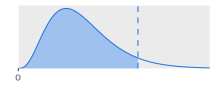

Sitzung 10 Chi-Quadrat-Tests
10.1 Lernziele dieser Sitzung
Sie können…
- einen \(\chi^2\)-Unabhängigkeitstest durchführen.
- einen \(\chi^2\)-Anpassungstest durchführen.
10.2 Anwendungsbereich
In Sitzung 9 haben wir gelernt, wie für bivariate Verteilungen Korrelationen beschrieben werden können, wenn beide Variablen nominalskaliert sind. Grundlage dafür waren die Häufigkeiten von Wertekombinationen in der Kreuztabelle.
Auch für \(\chi^2\)-Tests sind beobachtete Häufigkeiten in einer Kreuztabelle unser Ausgangspunkt. Wir fragen jedoch nicht nach einem Kennwert für die Stärke der Korrelation, sondern wollen wissen, ob es einen statistisch signifikanten Zusammenhang zwischen den beiden Variablen gibt – also einen Zusammenhang, der nur mit einer Wahrscheinlichkeit \(\alpha\) zufällig zustande gekommen ist.
Um den Unterschied zu verdeutlichen: Bei sehr großen Fallzahlen kann auch eine leichte Korrelation statistisch signifikant sein, bei kleinen Fallzahlen wird es es selbst für starke Korrelationen schwierig, eine statistische Signifikanz nachzuweisen.
Mit dem \(\chi^2\)-Unabhängigkeitstest und dem \(\chi^2\)-Anpassungstest lernen wir im Folgenden zwei leicht unterschiedliche Varianten des \(\chi^2\)-Tests kennen. Beide sollen direkt an Beispielen ausgeführt werden.
10.3 \(\chi^2\)-Unabhängigkeitstest
Grundlage sind bivariate Häufigkeiten, die in einer Kreuztabelle dargestellt werden können (s. 10.1). Wie Kreuztabellen erstellt werden, haben wir bereits in Sitzung 9 behandelt.
| Grundwehrdienst | Zivildienst | ||
|---|---|---|---|
| Land | 18 | 11 | 29 |
| Stadt | 10 | 23 | 33 |
| 28 | 34 | 62 |
Unser Beispieldatensatz beschäftigt sich mit Kriegsdienstverweigerern. Zwischen 1956 und 2011 galt in der BRD die Wehrpflicht, d.h. alle vom Staat als männlich
erfassten und als tauglich
gemusterte jungen Menschen mussten Dienst an der Waffe leisten – es sei denn, sie verweigerten den Kriegsdienst und leisteten stattdessen Zivildienst (z.B. in sozialen Einrichtungen).
Zusätzlich zur Frage der Kriegsdienstverweigerung sei in einer Zufallsstichprobe von als tauglich gemusterten erhoben, ob der Wohnort eine Gemeinde mit über oder unter 20000 Einwohner*innen (Stadt
oder Land
) ist.5 Die Ergebnisse sind in 10.1 zusammengefasst.
Wir interessieren uns für den statistischen Zusammenhang dieser beiden Variablen, und zwar möchten wir die Hypothese prüfen, dass Menschen aus der Stadt eher den Kriegsdienst verweigerten als Menschen vom Land. Der Test wird entlang der bekannten sechs Schritte ausgeführt.
10.3.1 Test wählen und Voraussetzungen prüfen
Für den \(\chi^2\)-Unabhängigkeitstest müssen folgende Voraussetzungen erfüllt sein:
- Ziel ist die Überprüfung einer bivariaten Verteilung auf einen statistisch signifikanten Zusammenhang zwischen zwei nominalskalierten Variablen.
- Grundlage sind beobachtete Häufigkeiten aus einer einfachen, unabhängigen Zufallsstichprobe.
- Alle Tabellenfelder enthalten beobachtete Häufigkeiten \((n_{ij}\geq 5)\).
Für unsere Beispieldaten sind diese Voraussetzungen gegeben.
10.3.2 Hypothesen formulieren
Wir haben wieder zwei Möglichkeiten: die gerichtete und die ungerichtete Alternativhypothese.
10.3.2.1 Ungerichtete Alternativhyptothese
Wir verzichten an dieser Stelle auf mathematische Notationen und würden bei ungerichteter Alternativhypothese im Klartext schreiben:
\[\begin{aligned} H_0 &: \textrm{Es gibt keinen Zusammenhang zwischen Wohnort und Verweigerungsentscheidung.}\\ H_1 &: \textrm{Es gibt einen Zusammenhang zwischen Wohnort und Verweigerungsentscheidung.} \end{aligned}\]
10.3.2.2 Gerichtete Alternativhyptothese
Im Falle einer gerichteteten Alternativhypothese bleibt die Nullhypothese bestehen, aber die Alternativhypothese gibt eine bestimmte Richtung des Zusammenhangs vor.
\[\begin{aligned} H_0 &: \textrm{Es gibt keinen Zusammenhang zwischen Wohnort und Verweigerungsentscheidung.}\\ H_1 &: \textrm{Es gibt einen positiven Zusammenhang zwischen Wohnort in der Stadt} \\ &\quad\textrm{und Kriegsdienstverweigerung.} \end{aligned}\]
Gerichtete Alternativhypothesen sind im \(\chi^2\)-Unabhängigkeitstest nur für \(2\times2\)-Tabellen möglich.
Im Beispiel entscheiden wir uns für die gerichtete Alternativhypothese, denn wir vermuten einen Zusammenhang in diese bestimmte Richtung.
10.3.3 Signifikanzniveau entscheiden
Wie in anderen Tests ist ein Signifikanzniveau von \(\alpha=0,05\) üblich, wofür wir uns auch im Beispiel entscheiden.
10.3.4 Kritischen Wert bestimmen
Bei \(\chi^2\)-Tests gibt es immer nur einen kritischen Wert. Zunächst müssen beim \(\chi^2\)-Unabhängigkeitstest die Freiheitsgrade bestimmt werden mit der Formel:
\[\mathit{df} = (k - 1) \cdot (\ell - 1) \tag{10.1}\]
wobei auch hier wieder \(k\) für die Zeilenanzahl und \(\ell\) für die Spaltenanzahl steht.
Im Beispiel also:
\[\begin{aligned} \mathit{df} &= (k - 1) \cdot (\ell - 1)\\ &=(2-1)\cdot (2 - 1) = 1 \end{aligned}\]
Damit lässt sich der kritische Wert an der Tabelle im Anhang ablesen, die allerdings für ungerichtete Alternativhypothesen ausgelegt ist.
Hätten wir eine ungerichtete Alternativhypothese gewählt, würde der Ablehnungsbereich also definiert durch:
\[\begin{aligned} \chi^2 &\geq \chi^2_{df;(1-\alpha)}\\ \chi^2 &\geq \chi^2_{1;95\%}\\ \chi^2 &\geq 3,841 \end{aligned}\]
Für unsere gerichtete Alternativhypothese dürfen
wir den Ablehnungsbereich jedoch verdoppeln (müssen aber im nächsten Schritt auch prüfen, ob die Richtung auch stimmt):
\[\begin{aligned} \chi^2 &\geq \chi^2_{df;(1-2\cdot\alpha)}\\ \chi^2 &\geq \chi^2_{1;90\%}\\ \chi^2 &\geq 2,706 \end{aligned}\]
10.3.5 Prüfgröße berechnen
Wie in Sitzung 9 besprochen, wird die Prüfgröße \(\chi^2\) anhand der Formel
\[ \chi^2= \sum_{i=1}^{k}\sum_{j=1}^{\ell}\frac{(n_{ij}-m_{ij})^{2}}{m_{ij}} \tag{9.2} \]
errechnet. Dabei ist die Ermittlung der Erwartungswerte \(m_{ij}\) ein notwendiger Schritt, und auch die Teilwerte für \(\chi^2\) können wieder direkt in die Kreuztabelle eingetragen werden.
| Grundwehrdienst | Zivildienst | ||
|---|---|---|---|
| Land |
18 (13,10) 1,833 |
11 (15,90) 1,510 |
29 |
| Stadt |
10 (14,90) 1,611 |
23 (18,10) 1,327 |
33 |
| 28 | 34 | 62 |
Für unser Beispiel erfolgt die Berechnung anhand 10.2.
Zunächst muss dabei geprüft werden, ob die Richtung unserer Alternativhypothese stimmt. Die beobachtete Häufigkeit der Zivildienstleistenden in der Stadt \(n_{22}=23\) ist größer als der Erwartungswert \(m_{22}=18,1\). Wenn eine Signifikanz nachgewiesen werden kann, dann also für den positiven Zusammenhang zwischen Wohnort in der Stadt und Kriegsdienstverweigerung (wie in unserer Alternativhypothese spezifiziert).
Für \(\chi^2\) ergibt sich im Beispiel:
\[\begin{aligned} \chi^2 &= \sum_{i=1}^{k}\sum_{j=1}^{\ell}\frac{(n_{ij}-m_{ij})^{2}}{m_{ij}}\\[4pt] &=1,833+1,51+1,611+1,327\\ &=6,281 \end{aligned}\]
10.3.6 Ergebnis interpretieren
Der Wert der Prüfgröße \(\chi^2=6,281\) liegt deutlich im Ablehnungsbereich \(\chi^2\geq 2,706\). Die Nullhypothese kann abgelehnt werden. Es wurde ein statistisch signifikanter positiver Zusammenhang zwischen Wohnort in Gemeinden mit über 20000 Einwohner*innen und Kriegsdienstverweigerung festgestellt (\(\alpha=0,05\)).
10.4 \(\chi^2\)-Anpassungstest
Beim \(\chi^2\)-Anpassungsest geht es um die Häufigkeiten eines nominalskalierten Merkmals – er ist deshalb der univariaten Teststatistik zuzuordnen. Der Test überprüft, ob das Merkmal entlang einer vorgegebenen Verteilung (im Normalfall gleichmäßig) verteilt ist, oder ob es signifikante Abweichungen von dieser erwarteten Verteilung gibt.
Ein Beispiel: Für größere Verspätungen (\(\geq\) 10 Minuten) beim ÖPNV einer Großstadt wird festgehalten, an welchen Wochentagen sie auftreten. Wir ignorieren Wochenden und Feiertage und fragen uns, ob sich die Verzögerungen gleichmäßig auf Werktage verteilen, oder ob es signifikante Abweichungen in Bezug auf den Wochentag gibt. Die Werte in 10.3 seien über drei Monate hinweg erhoben worden.
| Wochentag | Häufigkeit |
|---|---|
| Montag | 459 |
| Dienstag | 409 |
| Mittwoch | 414 |
| Donnerstag | 387 |
| Freitag | 437 |
Wir befolgen wieder die sechs Schritte für statistische Testverfahren.
10.4.1 Test wählen und Voraussetzungen prüfen
Für den \(\chi^2\)-Anpassungstest müssen folgende Voraussetzungen erfüllt sein:
- Ziel ist die Überprüfung einer nominalskalierten Variable auf eine statistisch signifikante Abweichung von einer vorgegebenen Verteilung.
- Grundlage sind beobachtete Häufigkeiten aus einer einfachen, unabhängigen Zufallsstichprobe.
- Alle Tabellenfelder enthalten beobachtete Häufigkeiten \((n_{i}\geq 5)\).
In unserem Beispiel sind diese Voraussetzungen gegeben.
10.4.2 Hypothesen formulieren
\[\begin{aligned} H_0 &: \textrm{Starke Verspätungen sind an allen Werktagen gleich wahrscheinlich.}\\ H_1 &: \textrm{Starke Verspätungen sind an manchen Wertkagen wahrscheinlicher als an anderen.} \end{aligned}\]
Gerichtete Hypothesen dürfen hier nur bei dichotomen Variablen formuliert werden (also bei zwei Tabellenfeldern).
10.4.3 Signifikanzniveau entscheiden
Üblich: \(\alpha=0,05\)
10.4.4 Kritischen Wert bestimmen
Die Freiheitsgrade bestimmen sich aus
\[\mathit{df}=k-1 \tag{10.2}\]
wobei \(k\) hier einfach die Anzahl der Katorien ist.
In unserem Beispiel (bei fünf Werktagen) also:
\[\begin{aligned} \mathit{df}&=k-1\\ &=5-1=4 \end{aligned}\]
Der kritische Wert für den Ablehnungsbereich ist der Tabelle im Anhang zu entnehmen.
\[\begin{aligned} \chi^2 &\geq \chi^2_{\mathit{df};(1-\alpha)}\\ \chi^2 &\geq \chi^2_{4;95\%}\\ \chi^2 &\geq 9,488 \end{aligned}\]
Auch hier wäre bei einer gerichteten Hypothese der kritische Wert \(\chi^2_{\mathit{df};(1-2\cdot \alpha)}\) anzuwenden – dies ist allerdings wie bereits erwähnt nur für dichotome Variablen möglich.
10.4.5 Prüfgröße berechnen
Die Prüfgröße \(\chi^2\) berechnet sich analog zu vorherigen Beispielen. Einzige Besonderheit: Die Erwartungswerte werden direkt anhand der zu erwartenden (im Regelfall: gleichmäßigen) Verteilung bestimmt.
Im Beispiel ergibt sich in den fünf Kategorien jeweils ein Erwartungswert von
\[\frac{n}{k}=\frac{2106}{5}=421,2\]
| Montag | Dienstag | Mittwoch | Donnerstag | Freitag | |
|---|---|---|---|---|---|
| 459 | 409 | 414 | 387 | 437 | 2106 |
| (421,2) | (421,2) | (421,2) | (421,2) | (421,2) | |
| 3,392 | 0,353 | 0,123 | 2,777 | 0,593 |
Dann nehmen wir wieder eine Tebelle zu Hilfe um die Prüfgröße \(\chi^2\) zu berechnen (s. 10.4). Wie gehabt werden einfach die Teilwerte zusammengezählt:
\[\begin{aligned} \chi^2 &= \sum_{i=1}^{k}\frac{(n_{i}-m_{i})^{2}}{m_{i}}\\[4pt] &=3,392 + 0,353 + 0,123 + 2,777 + 0,593\\ &=7,238 \end{aligned}\]
10.4.6 Ergebnis interpretieren
Der Ablehnungsbereich \(\chi^2 \geq 9,488\) wurde nicht erreicht. Die Nullhypothese muss beibehalten werden. Eine statistisch signifikante Abweichung von einer gleichmäßigen Verteilung konnte nicht nachgewiesen werden (\(\alpha=0,05\)).
10.4.7 Andere Verteilungen
Die theoretische Verteilung, von der eine signifikante Abweichung festgestellt werden soll, ist im obigen Beispiel uniform, d.h. gleichmäßig. Allerdings kann beim Anpassungstest auch von anderen Verteilungen ausgegangen werden – so könnte eine (begründete) Nullhypothese auch lauten, dass Kategorie A doppelt so viele Fallzahlen aufweist wie Kategorie B und C.
In der Praxis wird der \(\chi^2\)-Anpassungstest auch oft verwendet, um nachzuweisen, dass keine signifikante Abweichung von der Normalverteilung zu beobachten ist – nur dann dürfen nämlich viele statistische Verfahren durchgeführt werden.
10.5 Aufgaben
10.5.1 Aufgabe 1
Sie interessieren sich dafür, ob in einem Unternehmen der Tätigkeitsbereich mit dem Geschlecht der Angestellten zusammenhängt.
In den Personalakten sind Angestellte als männlich
oder weiblich
erfasst und ihre Tätigkeitsfelder in Leitende Tätigkeit
, Administration
und Fertigung
unterteilt.
Folgende Häufigkeiten sind erfasst:
- Welchen Test führen Sie durch?
- Formulieren Sie die Hypothesen.
- Das Thema wird in der Unternehmensleitung bereits kontrovers diskutiert, weshalb Sie einen Fehler 1. Art zu 99% ausschließen möchten. Wie lautet das Signifikanzniveau?
- Bestimmen Sie die Freiheitsgrade und den kritischen Wert.
- Berechnen Sie die Prüfgröße.
- Wie interpretieren Sie das Ergebnis?
10.5.2 Aufgabe 2
Eine Ihner Bekannten behauptet, dass beim Elfmeterschießen – statistisch gesehen
– in 60% der Fälle das Team gewinnt, das zuerst den Strafstoß ausführt.
Sie möchten das empirisch überprüfen und schauen sich in Archiven siebzig Partien bei Fußballturnieren an, die durch Elfmeterschießen entschieden wurden. Tatsächlich stellen Sie fest, dass in genau 60% der Fälle das zuerst ausführende Team gewann.
Prüfen Sie, ob diese Beobachtung auch statistisch relevant ist. Wählen Sie 5% als Signifikanzniveau.
10.6 Tipps zur Vertiefung
- Kapitel 9 in Bortz und Schuster (2010)
- Kapitel 5.3.4 in Bahrenberg, Giese und Nipper (2010)
- Kapitel 13 in Klemm (2002)
10.7 Anhang: \(\chi^2\)-Verteilungen

| \(df\) | 0,6 | 0,7 | 0,8 | 0,85 | 0,9 | 0,95 | 0,975 | 0,99 | 0,995 | 0,999 | 0,9995 |
|---|---|---|---|---|---|---|---|---|---|---|---|
| 1 | 0,708 | 1,074 | 1,642 | 2,072 | 2,706 | 3,841 | 5,024 | 6,635 | 7,879 | 10,828 | 12,116 |
| 2 | 1,833 | 2,408 | 3,219 | 3,794 | 4,605 | 5,991 | 7,378 | 9,210 | 10,597 | 13,816 | 15,202 |
| 3 | 2,946 | 3,665 | 4,642 | 5,317 | 6,251 | 7,815 | 9,348 | 11,345 | 12,838 | 16,266 | 17,730 |
| 4 | 4,045 | 4,878 | 5,989 | 6,745 | 7,779 | 9,488 | 11,143 | 13,277 | 14,860 | 18,467 | 19,997 |
| 5 | 5,132 | 6,064 | 7,289 | 8,115 | 9,236 | 11,070 | 12,833 | 15,086 | 16,750 | 20,515 | 22,105 |
| 6 | 6,211 | 7,231 | 8,558 | 9,446 | 10,645 | 12,592 | 14,449 | 16,812 | 18,548 | 22,458 | 24,103 |
| 7 | 7,283 | 8,383 | 9,803 | 10,748 | 12,017 | 14,067 | 16,013 | 18,475 | 20,278 | 24,322 | 26,018 |
| 8 | 8,351 | 9,524 | 11,030 | 12,027 | 13,362 | 15,507 | 17,535 | 20,090 | 21,955 | 26,124 | 27,868 |
| 9 | 9,414 | 10,656 | 12,242 | 13,288 | 14,684 | 16,919 | 19,023 | 21,666 | 23,589 | 27,877 | 29,666 |
| 10 | 10,473 | 11,781 | 13,442 | 14,534 | 15,987 | 18,307 | 20,483 | 23,209 | 25,188 | 29,588 | 31,420 |
| 11 | 11,530 | 12,899 | 14,631 | 15,767 | 17,275 | 19,675 | 21,920 | 24,725 | 26,757 | 31,264 | 33,137 |
| 12 | 12,584 | 14,011 | 15,812 | 16,989 | 18,549 | 21,026 | 23,337 | 26,217 | 28,300 | 32,909 | 34,821 |
| 13 | 13,636 | 15,119 | 16,985 | 18,202 | 19,812 | 22,362 | 24,736 | 27,688 | 29,819 | 34,528 | 36,478 |
| 14 | 14,685 | 16,222 | 18,151 | 19,406 | 21,064 | 23,685 | 26,119 | 29,141 | 31,319 | 36,123 | 38,109 |
| 15 | 15,733 | 17,322 | 19,311 | 20,603 | 22,307 | 24,996 | 27,488 | 30,578 | 32,801 | 37,697 | 39,719 |
| 16 | 16,780 | 18,418 | 20,465 | 21,793 | 23,542 | 26,296 | 28,845 | 32,000 | 34,267 | 39,252 | 41,308 |
| 17 | 17,824 | 19,511 | 21,615 | 22,977 | 24,769 | 27,587 | 30,191 | 33,409 | 35,718 | 40,790 | 42,879 |
| 18 | 18,868 | 20,601 | 22,760 | 24,155 | 25,989 | 28,869 | 31,526 | 34,805 | 37,156 | 42,312 | 44,434 |
| 19 | 19,910 | 21,689 | 23,900 | 25,329 | 27,204 | 30,144 | 32,852 | 36,191 | 38,582 | 43,820 | 45,973 |
| 20 | 20,951 | 22,775 | 25,038 | 26,498 | 28,412 | 31,410 | 34,170 | 37,566 | 39,997 | 45,315 | 47,498 |
| 25 | 26,143 | 28,172 | 30,675 | 32,282 | 34,382 | 37,652 | 40,646 | 44,314 | 46,928 | 52,620 | 54,947 |
| 30 | 31,316 | 33,530 | 36,250 | 37,990 | 40,256 | 43,773 | 46,979 | 50,892 | 53,672 | 59,703 | 62,162 |
| 35 | 36,475 | 38,859 | 41,778 | 43,640 | 46,059 | 49,802 | 53,203 | 57,342 | 60,275 | 66,619 | 69,199 |
| 40 | 41,622 | 44,165 | 47,269 | 49,244 | 51,805 | 55,758 | 59,342 | 63,691 | 66,766 | 73,402 | 76,095 |
| 45 | 46,761 | 49,452 | 52,729 | 54,810 | 57,505 | 61,656 | 65,410 | 69,957 | 73,166 | 80,077 | 82,876 |
| 50 | 51,892 | 54,723 | 58,164 | 60,346 | 63,167 | 67,505 | 71,420 | 76,154 | 79,490 | 86,661 | 89,561 |
| 60 | 62,135 | 65,227 | 68,972 | 71,341 | 74,397 | 79,082 | 83,298 | 88,379 | 91,952 | 99,607 | 102,695 |
| 70 | 72,358 | 75,689 | 79,715 | 82,255 | 85,527 | 90,531 | 95,023 | 100,425 | 104,215 | 112,317 | 115,578 |
| 80 | 82,566 | 86,120 | 90,405 | 93,106 | 96,578 | 101,879 | 106,629 | 112,329 | 116,321 | 124,839 | 128,261 |
| 90 | 92,761 | 96,524 | 101,054 | 103,904 | 107,565 | 113,145 | 118,136 | 124,116 | 128,299 | 137,208 | 140,782 |
| 100 | 102,946 | 106,906 | 111,667 | 114,659 | 118,498 | 124,342 | 129,561 | 135,807 | 140,169 | 149,449 | 153,167 |
| 110 | 113,121 | 117,269 | 122,250 | 125,376 | 129,385 | 135,480 | 140,917 | 147,414 | 151,948 | 161,581 | 165,435 |
| 120 | 123,289 | 127,616 | 132,806 | 136,062 | 140,233 | 146,567 | 152,211 | 158,950 | 163,648 | 173,617 | 177,603 |
| 130 | 133,450 | 137,949 | 143,340 | 146,719 | 151,045 | 157,610 | 163,453 | 170,423 | 175,278 | 185,571 | 189,682 |
| 140 | 143,604 | 148,269 | 153,854 | 157,352 | 161,827 | 168,613 | 174,648 | 181,840 | 186,847 | 197,451 | 201,683 |
| 150 | 153,753 | 158,577 | 164,349 | 167,962 | 172,581 | 179,581 | 185,800 | 193,208 | 198,360 | 209,265 | 213,613 |
| 200 | 204,434 | 209,985 | 216,609 | 220,744 | 226,021 | 233,994 | 241,058 | 249,445 | 255,264 | 267,541 | 272,423 |
| 300 | 305,574 | 312,346 | 320,397 | 325,409 | 331,789 | 341,395 | 349,874 | 359,906 | 366,844 | 381,425 | 387,203 |
| 400 | 406,535 | 414,335 | 423,590 | 429,340 | 436,649 | 447,632 | 457,305 | 468,724 | 476,606 | 493,132 | 499,666 |
| 500 | 507,382 | 516,087 | 526,401 | 532,803 | 540,930 | 553,127 | 563,852 | 576,493 | 585,207 | 603,446 | 610,648 |
10.8 Quellen
Hier wird also eine verhältnisskalierte Variable (Bevölkerungszahl der Gemeinde) in eine nominalskalierte Variable transformiert. In Fällen wie diesen, wo die Variable nach der Transformation nur zwei Werte annehmen kann, sprechen wir auch von der
Dichotomisierung
einer Variable.↩︎